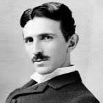
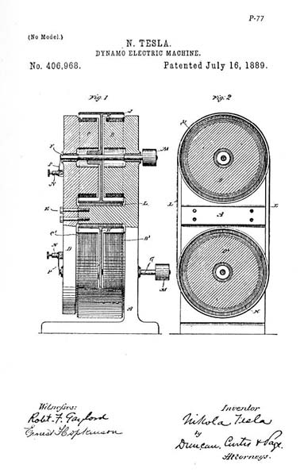
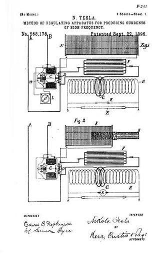

Otkrića Nikole Tesle nesumnjivo su značajna za čovečanstvo, međutim Tesla se kao jedan od najpoznatijih svetskih pronalazača i naučnika,
kod nas priznaje za genija. Ipak, zbog svojih izuma
on je neretko u stranim medijima dobijao i danas dobija status „ludog naučnika“, posebno u popularnoj kulturi.Najveća Teslina zasluga je uvođenje naizmenične struje u široku upotrebu.
Njegovi izumi zasnovani na naizmeničnoj struji postali su temelj celom daljem razvoju elektrotehnike. Ostvario je oko hiljadu pronalazaka i patenata: indukcioni motor,
trofazni sistem za prenos električne energije, generator i transformator za struje visoke frekvencije (Tesline struje) i drugo.

Svi smo mi jedno.Ljudi su medjusobno povezani nevidljivim silama.
Nikola Tesla
Naizmenična struja
Prvi patenti iz naizmeničnih struja. Prvobitni osnivači se nisu složili sa Teslom oko njegovih planova za uvođenje motora na naizmeničnu struju i na kraju je ostao bez finansijera i kompanije.
Tesla je potom radio u Njujorku kao običan radnik od 1886. do 1887. godine da bi se prehranio i skupio novac za svoj novi poduhvat.
Prvi elektromotor na naizmeničnu struju bez četkica je uspeo da konstruiše 1887. godine, i demonstrirao ga pred „Američkim društvom elektroinženjera“ (American Institute of Electrical Engineers, danas IEEE) 1888. godine.
Iste godine je razvio principe svog Teslinog kalema i počeo rad sa Džordžom Vestinghausom u laboratorijama njegove firme „Vestinghaus električna i proizvodna kompanija“ (Westinghouse Electric & Manufacturing Company).
Vestinghaus ga je poslušao u vezi njegovih ideja o višefaznim sistemima koji bi omogućili prenos naizmenične struje na velika rastojanja.

Eksperimenti sa X zracima
Aprila 1887. godine Tesla počinje istraživanje onoga što će kasnije biti nazvano Iks-zracima koristeći vakuumsku cev sa jednim kolenom (sličnu njegovom patentu 514170).
Ovaj uređaj je drugačiji od drugih ranih cevi za Iks-zrake jer nije imao elektrodu-metu. Savremen izraz za fenomen koji je razlog ovakvog dejstva uređaja je „probojno zračenje“.
Do 1892. godine je Tesla već bio upoznat sa radom Vilhelma Rentgena i njegovim pronalaskom efekata Iks-zraka.
Tesla nije priznavao postojanje opasnosti od rada sa Iks-zracima, pripisujući oštećenja na koži ozonu pre nego, do tada nepoznatom zračenju: „U vezi štetnih dejstava na kožu...
primećujem da su ona pogrešno tumačena... ona nisu od Rentgenovih zraka, već jedino od ozona stvorenog u kontaktu sa kožom. Azotna kiselina bi takođe mogla biti odgovorna, ali u manjoj meri“.
(Tesla, Electrical Review, 30. novembar 1895.) Ovo je pogrešna ocena što se tiče katodnih cevi sa Iks-zračenjem. Tesla je kasnije primetio opekotine kod asistenta koje potiču od Iks-zraka i stoga je vršio eksperimente.
Fotografisao je svoju ruku i fotografiju je poslao Rentgenu,
ali nije javno objavio svoj rad i pronalaske. Ovaj deo istraživanja je propao u požaru u laboratoriji u ulici Hjuston 1895. godine.
Otkriće radija i bežičnog prenosa
Kada je napunio 41 godinu, podneo je svoj prvi patent br. 645576 iz oblasti radija.
Godinu dana kasnije američkoj vojsci prikazuje model radijski upravljanog broda, verujući da vojska može biti zainteresovana za radio-kontrolisana torpeda.
Tada je on govorio o razvoju „umeća telematike“, vrste robotike. Radio kontrolisan brod je javno prikazan 1898. godine na električnoj izložbi u Medison Skver Gardenu.
Samo godinu dana kasnije predstavio je u Čikagu brod koji je bio sposoban i da zaroni. Ovi uređaji su imali inovativni rezonantni prijemnik i niz logičkih kola.
Radio-daljinsko upravljanje ostaje novotarija sve do Drugog svetskog rata. Iste godine Tesla je izmislio električni upaljač ili svećicu za benzinske motore sa unutrašnjim sagorevanjem,
za šta mu je priznat patent 609250 pod nazivom „Električni upaljač za benzinske motore“.

Zlatne godine stvaralaštva
Od 1893. do 1895. godine Tesla istražuje naizmenične struje visokih frekvencija.
Uspeva da proizvede naizmeničnu struju napona od milion volti koristeći Teslin kalem i proučavao je površinski efekat visokih frekvencija u provodnim materijalima,
bavio se sinhronizacijom električnih kola i rezonatorima, lampom sa razređenim gasom koja svetli bez žica, bežičnim prenosom električne energije i prvim prenosom radio-talasa.
U Sent Luisu je 1893. godine, pred 6000 gledalaca, Tesla prikazao na atraktivan način mnoge eksperimente uključujući i prenos sličan radio komunikaciji.
Obraćajući se Frenklinovom institutu u Filadelfiji i Nacionalnoj asocijaciji za električno osvetljenje on je opisao i demonstrirao svoje principe detaljno.
Tesline demonstracije izazivaju veliku pažnju i pomno se prate.
Svetska izložba 1893. godine u Čikagu, Svetska Kolumbovska izložba, je bila međunarodna izložba na kojoj je po prvi put ceo salon izdvojen samo za električna dostignuća.
To je bio istorijski događaj jer su Tesla i Vestinghaus predstavili posetiocima svoj sistem naizmenične struje osvetljavajući celu izložbu.
Prikazane su Tesline fluorescentne sijalice i sijalice sa jednim izvodom. Tesla je objasnio princip obrtnog magnetskog polja i indukcionog motora izazivajući divljenje pri demonstraciji obrtanja bakarnog jajeta i postavljanja na vrh,
što je predstavljeno kao Kolumbovo jaje.
To je korišćeno da se objasni i prikaže model obrtnog magnetskog polja i induktivnog motora.
Veliki udarac za istraživanja se desio 13. marta 1895. godine kada izbija veliki požar u laboratoriji u Južnoj petoj aveniji broj 35 kojom prilikom je izgorelo oko 400 električnih motora,
električni i mehanički oscilatori, transformatori, mnoge originalne konstrukcije i rukopis skoro završene knjige „Priča o 1001 indukcionom motoru“.Međutim,
to je bilo vreme izuzetne Tesline kreativnosti i žilavosti. Već 15. marta osniva kompaniju pod imenom „Nikola Tesla“ i nastavlja rad.
Teslin "zrak smrti"
Tesla je u svojoj laboratoriji dokazao da je Zemlja provodnik i vršeći pražnjenja od više miliona volti proizvodio veštačke munje duge više desetina metara. Tesla je takođe proučavao atmosferski elektricitet,
posmatrajući pražnjenja svojim prijemnicima. Reprodukujući njegove prijemnike i rezonantna kola mnogo godina kasnije se uvideo nepredvidivi nivo kompleksnosti (raspodeljeni helikoidni rezonator visokog faktora potiskivanja, radiofrekventno povratno kolo,
kola sa grubim heterodinim efektima i regenerativnim tehnikama). Tvrdio je čak da je izmerio i postojanje stojećih talasa u Zemlji.
Veliki izumitelj Nikola Tesla je bio opsednut stvaranjem zraka smrti kao konačnog oružja koje bi bilo toliko moćno da ljudi više ne bi imali želju za ratovanjem.
Tesla je zapravo jedini naučnik na tom području koji nije koristio sunce i ogledala za stvaranje zraka smrti već isključivo struju.
Tesla je objašnjavao da ni sva električna energija grada Njujorka koncentrisan u vazduhu, ne bi mogla da povredi čoveka na većoj udaljenosti.
Ali, zato usmeren prodoran snop čestica može biti smrtonosno oružje.
Naime, 1915. godine je Vardenklifski toranj prodat kako bi se otplatili dugovi koje je Tesla imao u hotelima Waldorf-Astoria. Do 1930. godine Teslu je ponovo morio poveći račun,
ovoga puta u hotelu guvernera Klintona na Menhetnu. Kako nije uspeo da obezbedi novac da isplati nastali dug, setio se da menadžmentu hotela ponudi nešto neprocenljivo: jedan od svojih pronalazaka.
Ovaj svoj pronalazak Tesla je nazivao Tele silom, premda je sada poznat kao Zrak smrti.
PROJEKAT NIKAD NIJE ZAVRŠEN ZVANIČNO
(FBI objavio dugo čuvana dokumenta koja potvrdjuju ovaj projekat (pogledajte ovde))